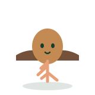

Mascotas por libro
Ocho estados. Lemas pendientes.
- 01

Maceta
LIBRO AÑADIDO - 02

Semilla
PRIMERA CARTA - 03

Raíz
20 % - 04

Brote
40 % - 05

Tallo
60 % - 06

Planta
75 % - 07

Flor
90 % - 08
Infinito
100 %
ReedleavesOcho estados. Lemas pendientes.
